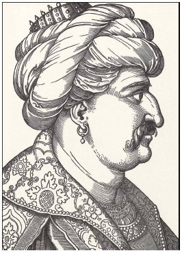

Ataları hep sakal uzattıkları halde, Yavuz Sultan Selim sakalını keserdi. Bunun sebebini soranlara “Sakalımı ele vermemek için kesiyorum” dediği rivayet edilir. Bir kulağına da küpe takardı. Son dönemlerde Yavuz’un küpeli göründüğü resimlerin aslında Şah İsmail’e ait olduğu da iddia edilmektedir; ancak Yavuz’un küpe taktığını iddia edenler de, tersini iddia edenler de çok sağlam kanıtlara sahip değildir. Yavuz 22 Eylül 1520’de “aslan pençesi” denen bir çıban yüzünden, henüz 50 yaşında iken vefat etti.

Yavuz Sultan Selim (Çizen: Erhard Schön - 1534)